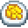

Receitas Mais fáceis
receitas mais simples do Stardew Valley, com ingredientes fáceis de conseguir e que geralmente podem ser feitas logo no início do jogo
| Imagem | Nome | Ingredientes | onde conseguir? |
|---|---|---|---|

|
Ovo Frito | Ovo (1) | Ao desbloquear a cozinha |
|  | Omelete | Ovo (1); Leite (1) | Saloon por 500 ouros ou Rainha do Molho no dia 28 da Primavera, Ano 1 |
 |
Sashimi | Linus (Correio - 3+) | Qualquer peixe (1) |

|
Pão | Farinha de trigo (1) | Saloon por 500 ouros ou na Rainha do Molho no dia 28 do Verão, Ano 1 |

|
Panquecas | Farinha de trigo (1); Ovo (1) | Saloon por 500 ouros ou Rainha do Molho no dia 14 do Verão, Ano 1 |